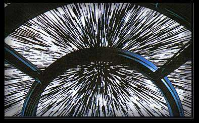

Forums galactiques > Assemblée Galactique : diplomatie officielle > Coalition des F.T.P
Pages : 1 2
| Chil powo Respect diplomatique : 406  27/05 ETU 19:16 | Score : 3 Détails Le commandant Chil Powo prit la parole, et parla fortement. Il n’attendit pas même le totale silence
qui vénère pour ses prises de paroles !! Messieurs, je vous rejoint immédiatement ... En tant que fervent defender de la démocratie !! Je mais propose également volontaire pour tenir un rôle majeur dans le gouvernement !! Effectivement, la démocratie sa doit d’être vite, très vite mis en place et consolidée !! Le commandant Chil Powo serra le poing et fronça les sourcils. Il dit d’un ton emporté ; Ce n’est pas de précipitation dont je parle la, mais de la nécessité urgente de la création d’un gouvernement !! Il faut reconstruire, réparer et consolidé les pilier de la démocratie qu’ares a tant attaqué !! Puis il se calmât, et dit d’une voie bien plus calme : C’est pour cela, Yanluowang, que je me présente à vous pour rejoindre votre coalition ! J’espère que vous m’aviez déjà vu dans certaine de mes interventions, aussi vous saurez a quel point de veut cette élection et cette démocratie ! Et je me présenterait également a tout les commandant pour les représenter en constituant, avec tout ceux de cette coalition au buts merveilleux, un gouvernement fiable et démocratique ! Il salua Yanluowang et se rassit à sa place. | ||
| Yanluowang Respect diplomatique : 88  28/05 ETU 10:33 | Score : 2 Détails Je m’avançais tranquillement au sein de l’estrade. Aujourd’hui seulement Quatre gardes m’entouraient.
« Chères âmes. Bonjour. J’annonce officiellement l’ouverture de la coalition F.T.P ! Aucun besoin de faire des candidatures, j’ai juste besoin d’UN détail : Vous devez donné votre parole. Pendant tout le temps que vous participerez à la coalition votre coopération, votre envie de faire le bien, ainsi que de participer diplomatiquement ou militairement à la défaite de Ares sera obligatoire, sauf pour les guildiens qui ont pour but d’armer les commandants spécialisés dans la guerre ou dans leur défense personnel. Cependant, je déconseille aux espions d’Ares de venir s’infiltrer, ils risqueraient de le regretter, et de sans mordre les doigts toute leur vie, car ils n’auront plus qu’a créait un nouveau compte et de détruire l’ancien ! Je vous attends nombreux ! » Comme rarement je quittais l’Assemblée Galactique avec le sourire aux lèvres, je me rendais compte que ce que je faisais été bien. | ||
| Gerolstein Respect diplomatique : 161  28/05 ETU 10:35 | Score : 2 Détails Yanluowang;
Soyez tout de même prudent, des bons espions, j'en ai connu! Ne prenez pas trop de personnes sous prétexte que vous en avez besoin. Faites attention. Je vous souhaite une longue vie, vous et votre coalition. | ||
| Paquito Respect diplomatique : -6  28/05 ETU 20:44 | Score : 0 Détails Je vous suivrais Yanluowang!
A votre service! |
Pages : 1 2
Forums galactiques > Assemblée Galactique : diplomatie officielle > Coalition des F.T.P